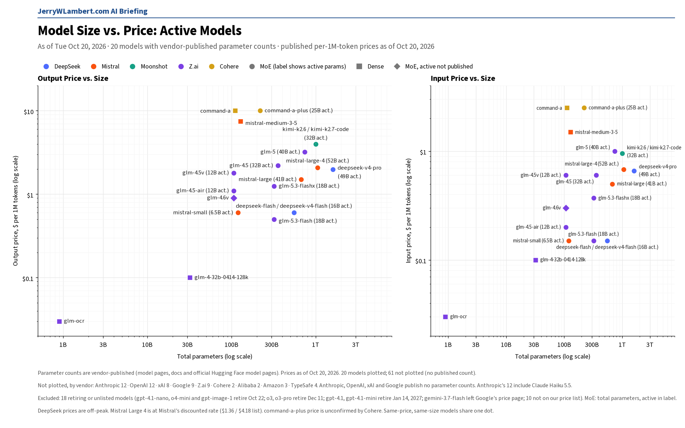
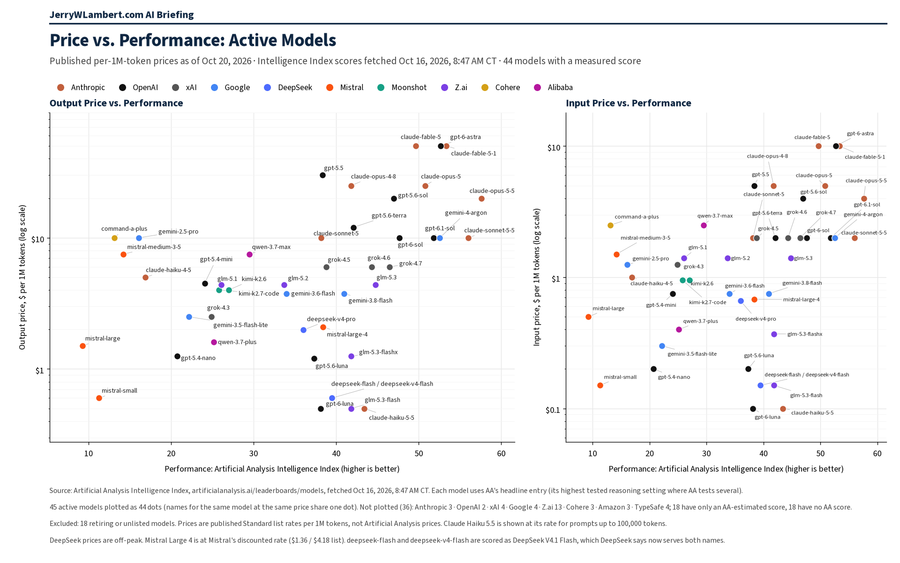

Daily Model Brief, October 20, 2026
No vendor changed an existing token price since Monday and no new publicly priced model appeared. Google's pricing page now warns that the Gemini Omni Flash and Veo 3.1 previews shut down this Thursday, October 22, and Google lists Gemini Omni Flash as stable.
Download PDFExecutive Summary
No vendor changed an existing chat or token price between Monday morning and this morning, and no new model with a published price appeared. MiniMax's new MiniMax M3.1 Flash (MiniMax-M3.1-Flash) is unchanged at $0.15 input, $0.015 cached and $0.60 output per million tokens. DeepSeek, Moonshot, Mistral, Meta and MiniMax pages are unchanged since Monday.
Google's pricing page (last updated October 19, 2026 UTC) now warns that Gemini Omni Flash Preview (gemini-omni-flash-preview) and the three Veo 3.1 preview video models will be shut down on Thursday, October 22, 2026, and points users to Gemini Omni Flash (gemini-omni-1.1-flash), which Google's models page now lists as stable. The October 22 date was already on Google's deprecations page; it did not move. Google's token prices are unchanged, including Gemini 4 Argon's launch price of $2.00 / $0.10 / $10.00 through November 30.
Anthropic reorganized its fast-mode page with no price change. Claude Opus 5.5 fast mode costs $8 input and $40 output per million tokens and needs no beta header. Fast mode on Claude Opus 5 and Claude Opus 4.8 ($10 / $50) stays in research preview, and Anthropic now states that requests setting speed on those models without the fast-mode-2026-02-01 beta header return a 400 error.
Perplexity corrected its Agent API changelog: the xhigh preset has used Fast Search since its October update, so web_search calls under the low, medium, high and xhigh presets all bill at $1.00 per 1,000 calls rather than $2.50. The xhigh preset's output budget rose to 512,000 tokens from 128,000. Decisions API prices are unchanged.
Shutdown dates are unchanged. gpt-4.1-nano, o4-mini and gpt-image-1 (OpenAI) shut down this Thursday evening, October 22 (CT), the same day as Google's Gemini Omni Flash and Veo 3.1 previews. GPT-4.1, GPT-4.1 mini, GPT-4o and GPT-4o mini follow on January 14, 2027.
Anthropic, OpenAI, Google, xAI, DeepSeek, Moonshot, Z.ai, MiniMax, Mistral, Meta and TypeSafe published no token price changes. IBM Granite is unchanged at $0.0636 / $0.265, though IBM's model docs returned 403. Alibaba's price page blocked automated reading today, so Qwen prices could not be re-checked; they last matched on October 19. Amazon's Bedrock price pages still fail to load, ByteDance's price page now loads only a JavaScript shell, Microsoft's Foundry catalog lists no pay-as-you-go prices, and Cohere still publishes no full token matrix.
What This Means for Customers
- If you still call
gemini-omni-flash-previewor a Veo 3.1 preview model (veo-3.1-generate-preview,veo-3.1-fast-generate-previeworveo-3.1-lite-generate-preview), move togemini-omni-1.1-flashbefore Thursday, October 22. Google gives no time of day, so plan to finish the switch on Wednesday. - If you call
gpt-4.1-nano,o4-miniorgpt-image-1, you have until Thursday evening, October 22 (CT). Google's deep-research-pro preview ends October 23, and Perplexity retires its routes to older OpenAI models at 7:00 PM CT on October 23. - If you want fast mode on Claude Opus 5 or Opus 4.8, request access from Anthropic and send the fast-mode-2026-02-01 beta header; without it, the request fails with a 400 error. Opus 5.5 fast mode needs no header and costs twice the standard rate.
- If you use Perplexity's Agent API presets, web search under low, medium, high and xhigh bills at $1.00 per 1,000 calls. Setting search_type to "web" keeps standard web search at $2.50 per 1,000.
- If your agents search the web through DeepSeek Harness, Claude Code or Codex, those server-side calls start billing at $0.75 per 1,000 successful Search or Fetch requests at 11:00 AM CT on Saturday, October 31. Track this separately from token spend.
- If you call
gpt-4o,gpt-4o-mini,gpt-4.1orgpt-4.1-mini, you still have until January 14, 2027. Testgpt-6-lunanow; it lists at $0.10 input, $0.01 cached and $0.50 output per million tokens (short context). - Claude Haiku 4.5 is still active. Anthropic lists retirement not sooner than October 15, 2026, a date that has passed, and still sets no date. Keep a tested fallback ready.
New Models and Price Changes
Prices in USD per 1M tokens.
| Vendor | Model ID | Status | Input | Cached | Output |
|---|---|---|---|---|---|
| MiniMax | MiniMax-M3.1-Flash | Unchanged since launch Oct 19. Open-weight; up to 1,000,000-token context. | $0.15 | $0.015 | $0.60 |
| MiniMax | MiniMax-M3 (up to 512K input) | Unchanged. Over 512K input: $0.60 / $0.12 / $2.40. | $0.30 | $0.06 | $1.20 |
| Anthropic | claude-opus-5-5 (fast mode) | Unchanged; page reorganized. Twice the standard rate; no beta header needed. | $8.00 | Not listed | $40.00 |
| Anthropic | claude-opus-5 / claude-opus-4-8 (fast mode) | Unchanged. Research preview; requests without the beta header return a 400 error. | $10.00 | Not listed | $50.00 |
| gemini-4-argon | Unchanged. Paid tier only. Launch price through Nov 30, 2026 (thinking billed as output). | $2.00 | $0.10 | $10.00 | |
| gemini-4-argon (from Dec 1, 2026) | Scheduled Standard price printed by Google. | $4.00 | $0.20 | $20.00 | |
| Perplexity | Agent API web_search (presets) | Low, medium, high and xhigh presets use Fast Search at $1.00 per 1,000 calls; standard web search $2.50 per 1,000. | Per call | — | Per call |
| Perplexity | pplx-decider-flash-v1.2 | Unchanged. Decisions API; output free. | $0.01 | — | Free |
| Perplexity | pplx-decider-v1.2 | Unchanged. Decisions API; output free. | $0.02 | — | Free |
| DeepSeek | Search API / Fetch API | Unchanged. Billing for calls through DeepSeek Harness, Claude Code and Codex starts Oct 31, 11:00 AM CT. $0.75 per 1,000 successful requests each. | Per request | — | Per request |
| DeepSeek | deepseek-flash | Unchanged. Served by DeepSeek-V4.1-Flash-1017 (off-peak shown). | $0.15 | $0.003 | $0.60 |
| Meta | muse-wonder-1.0 | Unchanged (preview). | $4.00 | $0.20 | $20.00 |
| TypeSafe | jev-1.14.0 / jev-preview | Unchanged; API docs rewritten. jev-preview points here; output free. | $0.042 | — | $0 |
| TypeSafe | jev-1.13.0 / jev-latest | Unchanged. jev-latest still points here. | $0.042 | — | $0 |
| OpenAI | gpt-6-luna | Named replacement for GPT-4.1 and GPT-4o models. Unchanged (short context). | $0.10 | $0.01 | $0.50 |
| IBM | granite-4-h-small | Unchanged. Model docs returned 403 today. | $0.0636 | Not listed | $0.265 |
| Alibaba | qwen3.7-max | Unverified today (price page blocked). Last confirmed Oct 19. | $2.50 | — | $7.50 |
| Alibaba | qwen3.7-plus | Unverified today (price page blocked). Last confirmed Oct 19. | $0.40 | — | $1.60 |
- No price changes today. Every price above was checked against the vendor's own page this morning except Alibaba's, which blocked automated reading; those two prices are as last confirmed on October 19, 2026.
- Anthropic fast mode: Anthropic says fast mode delivers up to 2.5 times higher output tokens per second at premium pricing and is available on the Claude API, including Claude Managed Agents. It is generally available on Claude Opus 5.5; for Opus 5 and Opus 4.8, access is through an account manager or the waitlist.
- Google: Gemini Omni Flash moved from New to Stable on Google's models page. Nano Banana 2.1 image output is unchanged at the equivalent of $0.0336 per 1K image, $0.0504 per 2K image and $0.113 per 4K image. Grounding with Google Search is unchanged: 5,000 free requests per month shared across Gemini 3 and newer models, then $14 per 1,000.
- Perplexity Agent API: if you use a frozen configuration for the xhigh preset, update max_output_tokens to match the new 512,000-token output budget.
- TypeSafe rewrote its API documentation (request rules and compression). Prices and aliases are unchanged: jev-latest points to jev-1.13.0 and jev-preview to jev-1.14.0, both at $0.042 per million input tokens with output free.
- Other changes with no price impact: Anthropic's Models API now reports a thinking.types.between_tools capability, and ByteDance updated its model list on October 19.
- Amazon's Bedrock price pages could not be read today (JavaScript shell only), ByteDance's price page now loads only a JavaScript shell, Alibaba's price page returned a captcha, Cohere still publishes no full token matrix, Microsoft's Foundry catalog lists no pay-as-you-go prices, and IBM's supported-models docs returned 403. Their last confirmed prices stand.
Deprecations
| Vendor | Model ID | Shutdown (CT) | Replacement | Note |
|---|---|---|---|---|
| OpenAI | gpt-4.1-nano o4-mini gpt-image-1 | Thu Oct 22, 2026, 7:00 PM CT | gpt-5.6-luna gpt-5.6-terra gpt-image-2.5-sunburst or gpt-image-2.5-flare | Unchanged. This Thursday. OpenAI lists Oct 23 with no time; 7:00 PM CT Oct 22 is 00:00 UTC Oct 23. |
| gemini-omni-flash-preview | Thu Oct 22, 2026 (time not stated) | gemini-omni-1.1-flash | Date unchanged. Google's pricing page now carries a shutdown warning; Gemini Omni Flash is now stable. | |
| veo-3.1-generate-preview veo-3.1-fast-generate-preview veo-3.1-lite-generate-preview | Thu Oct 22, 2026 (time not stated) | gemini-omni-1.1-flash | Date unchanged. Warning now on Google's pricing and models pages. | |
| deep-research-pro-preview-12-2025 | Fri Oct 23, 2026 (time not stated) | deep-research-preview-04-2026 | Unchanged. | |
| Microsoft (Azure) | Ministral-3B mistral-medium-2505 mistral-small-2503 | Wed Dec 9, 2026 (time not stated) | ministral-ministral-4b-instruct mistral-medium-3-5 mistral-small-4-119b-2603 | Unchanged since Oct 19. Applies to Azure deployments, not Mistral's own API. |
| OpenAI | gpt-4.1 (gpt-4.1-2025-04-14) gpt-4.1-mini (gpt-4.1-mini-2025-04-14) | Wed Jan 13, 2027, 6:00 PM CT | gpt-6-luna | Unchanged since Oct 14. OpenAI lists Jan 14, 2027 with no time; 6:00 PM CT Jan 13 is 00:00 UTC Jan 14. Each is the only listed snapshot, so the plain names stop too. |
| OpenAI | gpt-4o-2024-08-06 gpt-4o-2024-11-20 gpt-4o-mini-2024-07-18 | Wed Jan 13, 2027, 6:00 PM CT | gpt-6-luna | Unchanged since Oct 14. Same notice and timing. Fine-tuned versions follow the same schedule. |
| gemini-3.5-flash | Not shutting down (Google lists N/A) | gemini-3.6-flash (Google auto-route) | Unchanged since Oct 12. Google routes requests automatically. | |
| gemini-3.7-flash | Not shutting down (Google lists N/A) | gemini-3.8-flash (Google auto-route) | Unchanged since Oct 12. Same wording as gemini-3.5-flash. | |
| gemini-3.1-flash-image | No shutdown date announced | gemini-nano-banana-2.1 | Unchanged. | |
| gemini-3.1-flash-tts-preview gemini-2.5-flash-preview-tts gemini-2.5-pro-preview-tts | Tue Nov 17, 2026 (time not stated) | gemini-3.8-flash-tts or gemini-3.8-flash-lite-tts | Unchanged. | |
| gemini-3.1-flash-live-preview gemini-2.5-flash-native-audio-preview-12-2025 | Tue Nov 17, 2026 (time not stated) | gemini-3.8-live | Unchanged. | |
| Anthropic | claude-sonnet-4-5-20250929 | Mon Nov 30, 2026 (time not stated) | claude-sonnet-5-5 | Unchanged. |
| Anthropic | claude-haiku-4-5-20251001 | Not sooner than Thu Oct 15, 2026; no date set | None named | Watch item. The earliest date has passed; still active on Anthropic's deprecations page today with no date set. |
| Cohere | command-r command-r-plus | Deprecated Sep 15, 2025; no shutdown date set | command-r-08-2024 command-r-plus-08-2024 command-a-03-2025 | Closed to new customers; existing users keep access until retirement. |
- Perplexity will retire its Agent API and Orchestrator API routes to older OpenAI models (openai/gpt-5.4, gpt-5.4-mini, gpt-5.4-nano, gpt-5.2, gpt-5.1, gpt-5 and gpt-5-mini) at 7:00 PM CT on Fri Oct 23, 2026 (00:00 UTC Oct 24). Unchanged.
- Microsoft's Foundry retirement page still lists claude-opus-5-5-fast (version 2) on Azure retiring Fri Jan 15, 2027, with no replacement named.
- OpenAI's earlier notices are unchanged: gpt-5.3-codex, gpt-5.1 and gpt-5.4-nano shut down April 1, 2027, and the /v1/audio/translations endpoint shuts down February 26, 2027, replaced by v1/realtime/translations.
- Google updated the recommended replacements for models that have already shut down: older Veo models now point to gemini-omni-1.1-flash, Imagen 4 models to gemini-nano-banana-2.1, and older Gemini Flash-Lite models to gemini-3.1-flash-lite. No shutdown dates moved. Anthropic, Google and Cohere show no shutdown-date changes since Monday.
- Unverified: Google's deprecations page still shows gemini-2.5-flash-image shutting down Mon Mar 15, 2027, with gemini-3.1-flash-lite-image as the replacement, while Google's pricing page says it shut down Oct 2, 2026. Confirm with Google before you budget either date.
Model Size vs. Price

Across the 20 active models whose vendors publish parameter counts, price rises only loosely with total size (rank correlation 0.39 on output price). Anthropic, OpenAI, xAI and Google publish no parameter counts, so their models, including Claude Haiku 5.5, GPT-6.1 Sol and Gemini 4 Argon, are not plotted. No plotted price changed since Monday. Prices as of October 20, 2026.
Price vs. Performance

Across the 45 active models with a measured Artificial Analysis Intelligence Index score, price rises with performance only loosely (rank correlation 0.45 on output price). Claude Haiku 5.5 leads at $0.50 or less (43.4); GPT-6.1 Sol scores 51.8 and Gemini 4 Argon 52.6, each at $10. Scores as fetched October 16, 2026, 8:47 AM CT, the most recent complete leaderboard read; prices as of October 20, 2026.
All times Central. Vendor prices, dates and model IDs are taken from first-party vendor pricing, model, deprecation and changelog pages as of 8:26 AM CT on October 20, 2026. Chart prices are as of October 20, 2026. Performance scores are from the Artificial Analysis Intelligence Index, fetched 8:47 AM CT on October 16, 2026 (the most recent complete leaderboard read). Items that could not be confirmed are marked unverified.